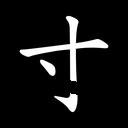
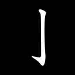
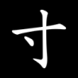
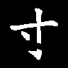
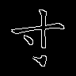

sab9a4c94d829

先判断：明显结构异常 / 合法可接受 / 不确定或不可读。
判断后展开原字、完整笔画和 mask
来源字：寸；单笔内部断裂；原笔画序号（从 1 开始）：[2]





{"attempts": 1.0, "break_after_parts_96_t128": 2.0, "break_after_parts_96_t9": 2.0, "break_after_parts_native_t128": 2.0, "break_after_parts_native_t9": 2.0, "break_before_parts_96_t128": 1.0, "break_before_parts_96_t9": 1.0, "break_before_parts_native_t128": 1.0, "break_before_parts_native_t9": 1.0, "break_center_x_96": 54.625, "break_center_y_96": 65.125, "break_part_1_area_96_t128": 241.0, "break_part_1_area_96_t9": 321.0, "break_part_1_area_native_t128": 430.0, "break_part_1_area_native_t9": 530.0, "break_part_1_length_96_t128": 46.0, "break_part_1_length_96_t9": 49.0, "break_part_1_length_native_t128": 64.0, "break_part_1_length_native_t9": 64.0, "break_part_1_support_96_t128": 47.0, "break_part_1_support_96_t9": 49.0, "break_part_1_support_native_t128": 64.0, "break_part_1_support_native_t9": 64.0, "break_part_2_area_96_t128": 121.0, "break_part_2_area_96_t9": 160.0, "break_part_2_area_native_t128": 213.0, "break_part_2_area_native_t9": 251.0, "break_part_2_length_96_t128": 19.0, "break_part_2_length_96_t9": 25.0, "break_part_2_length_native_t128": 37.0, "break_part_2_length_native_t9": 33.0, "break_part_2_support_96_t128": 22.0, "break_part_2_support_96_t9": 22.0, "break_part_2_support_native_t128": 33.0, "break_part_2_support_native_t9": 32.0, "break_visible_gap_96_t128": 9.0, "break_visible_gap_96_t9": 7.787599563598633, "broken_stroke_count": 1.0, "changed_fraction": 0.07668711656441718, "gap_length": 12.58007748834781, "gap_length_96": 9.435058116260858, "glyph_scale": 96.0, "input_changed_fraction": 0.08785529715762273, "input_changed_pixels": 68.0, "input_edge_changed_pixels": 31.0, "input_foreground_changed_pixels": 59.0, "local_stroke_width": 8.0, "local_stroke_width_96": 6.0}下载操作前后笔画层（NPZ）


{kind=link}